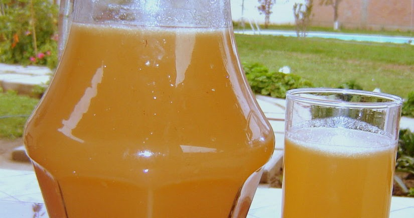
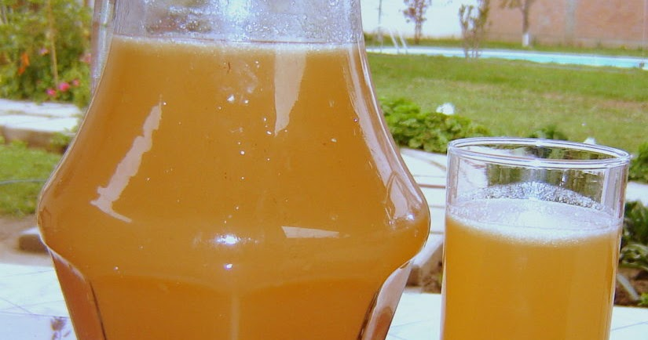

Ingredientes
- 1 kilo de maíz de jora
- 1 kilo de cebada
- 8 litros de agua
- 100 gramos de chancaca
- Azúcar al gusto
- 1/2 cucharada de clavo de olor
- 5 litros de agua
Utensilios
- Olla De Acero Inoxidable
- Cucharon ondo de cocina
- Cucharon de madera
La chicha de jora o Aqha en quechua, es una bebida fermentada oriunda de Sudamericana, para ser más detallados difundida en Perú, Bolivia y Ecuador. Presenta diversas variedades según la región donde lo preparan, pero la base de su preparación es principalmente la Jora, es decir; maiza malteado.
 



La mazamorra morada es uno de los postres más populares de Perú. Tanto es así, que hoy en día es conocida en prácticamente todo el mundo. Se caracteriza por presentar una textura espesa y suave a la vez, un sabor dulce y un color morado intenso.
 Costa
Costa
 Postre
Postre

Los Andes del Perú es fuente de la Pachamanca a la Olla. Es allí donde la tierra se convierte en olla para dar fruto a la Pachamanca, plato originario del antiguo Perú. este plato se prepara bajo tierra, en un horno hecho con piedras y que es cubierto por hojas de choclo (maíz), varias carnes (res, cerdo, pollo y cordero), verduras y tubérculos y humitas de maíz, que resultan ser un manjar para el paladar.
 Sierra
Sierra
 Platillos
Platillos

¿Eres de los que disfruta de un rico snack antes de comer? Entonces la receta de Chifles puede ser la que buscas. Deliciosas rodajitas de plátano verde, muy crujientes y doraditas, que van bien tanto solas como acompañadas. ¿Lo mejor de todo? Son increíblemente fáciles y rápidas de hacer. ¡Aprende hoy a prepararlas con nosotros!
 Selva
Selva
 Entrada
Entrada